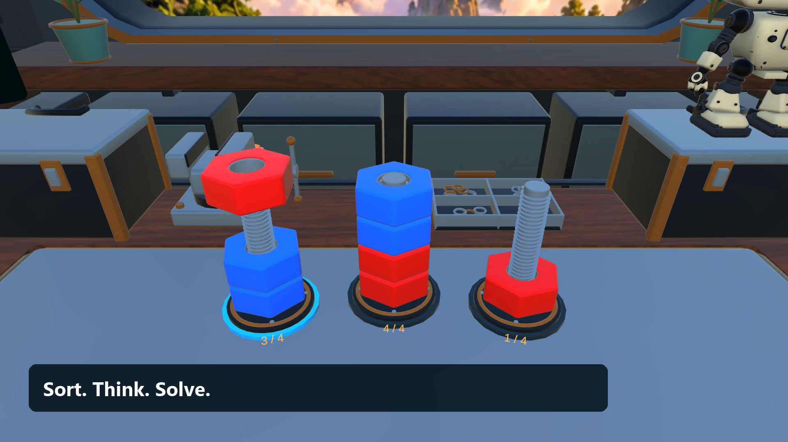

EXTRUDE GAMING
Nut Sort VR: Bolt's Workshop
A cozy color-sorting puzzle workshop with a little robot companion.
Get it on Meta Quest — US$7.99
Available now. One purchase; no ads, subscriptions or in-app purchases. Regional prices may vary. For ages 13+ or the applicable age in your region.
See the workshop in action

Actual gameplay capture with illustrated opening and closing title cards. Watch on YouTube.
Sort nuts, solve 60 main puzzles and six bonus challenges, earn coins and building parts, and take a break with Bolt. Explore six workshop settings, repair a music box, build a miniature rover and play fetch.
Controls and comfort
Use Touch controllers to aim and select holders or buttons. Grip interactive objects to pick them up. Recenter at the workbench if your view is misaligned, flick the left stick forward/back for small positioning steps, use snap turning or marked teleport destinations, and move menus using their grip bars. Drag the empty area of the side menu to scroll. Audio and vibration options are available in the game.
Need help?
Email raheelswati1@gmail.com. Include your headset model, game version and a description of the problem. A screenshot can help. Do not send passwords or private recordings.
Undo and Retry are free. Coins and parts are earned by playing; this release has no ads, subscriptions or in-app purchases. All essential actions are available through controller buttons without microphone permission.